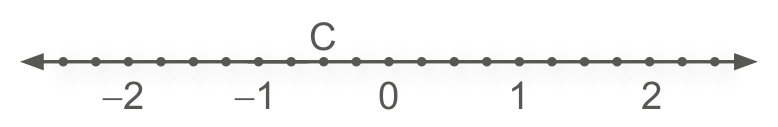

| Principais habilidades da BNCC | EF07MA10 |
| Competências | CE6, CE8 CG8, CG9 |
Neste capítulo, apresentamos a definição de módulo de um número racional, que representa a distância deste ao 0 (zero) na reta numérica. Pelo fato de indicar uma distância, representa uma medida, portanto é dado por um número positivo.
Explore com os alunos a representação de números opostos ou simétricos na reta numérica. Apresente vários números a eles e solicite que, no caderno, construam uma reta numérica e representem os seus opostos.
CAPÍTULO 3 - Módulo de um número racional
Você já sabe que os números racionais podem ser representados por um ponto em uma reta numérica.
A seguir, temos representados os números - 3 e + 3.
1. Troque ideias com um colega e respondam: Qual é a distância de - 3 até o 0 (zero)?

A distância entre um ponto que representa esse número na reta e o ponto que representa o 0 (zero) se chama módulo ou valor absoluto deste número.
![Reta numérica com 21 pontos com o ponto do número zero ao centro. Uma linha tracejada verde, no ponto zero divide a reta em números negativos, à esquerda, e número positivos, à direita. Os números negativos da esquerda para a direita: menos 10, menos 9, menos 8, menos 7, menos 6, menos 5, menos 4, menos 3, menos 2, menos 1. Os números positivos da esquerda para a direita: 1, 2, 3, 4, 5, 6, 7, 8, 9, 10. Abaixo da reta, uma linha na cor verde delimita a distância do número menos 3 ao zero e do zero ao mais 3. Ao centro, no número zero, uma linha tracejada, na vertical.](../../resources/images/unidade1/capitulo3/imagem2.png)
A distância do número -3 ao 0 (zero) corresponde a três unidades. Como a distância entre o + 3 e o 0 (zero) também é de três unidades, dizemos que:
- |- 3| = 3 (Lemos: módulo de menos três é igual a três).
- |+ 3| = 3 (Lemos: módulo de três é igual a três).
Os números - 3 e + 3 são chamados de opostos ou simétricos, pois estão à mesma distância de 0 (zero).
Veja outros exemplos de números opostos ou simétricos:
- - 5 e + 5.
- - 7 e + 7.
- -\(\frac{3}{5}\) e +\(\frac{3}{5}\)
- -6,1 e +6,1
31
UNIDADE 1 - CAPÍTULO 3
Sugestão de atividade
Durante a aula, construa uma reta numérica no chão da sala, com barbante e alguns nós indicando os números inteiros. Em seguida, solicite que os alunos percorram a reta representando alguns números previamente escolhidos. Essa atividade visa promover a interação entre os alunos e também um aprendizado mais significante aos alunos.
ENCONTRE SOLUÇÕES
1. Qual é o módulo de:
a) |- 13|? 13
b) |\(-\frac{8}{7}\)|? \(\color{magenta} \frac{8}{7}\)
c) |-4|? 4
d) |\(-\frac{6}{11}\)|? \(\color{magenta} \frac{6}{11}\)
e) |- 8|? 8
f) |8|? 8
g) |- 145|? 145
h) |1 243|? 1243
i) |24|? 24
j) |\(\frac{3}{5}\)|? \(\color{magenta} \frac{3}{5}\)
k) |- 32|? 32
l) |9,75| ? 9,75
2. No caderno, represente em uma reta numérica cada número abaixo e o seu oposto.
- -2
- \(\frac{1}{2}\)
- 3,5
- +4
3. Entre os números racionais - 15; + 42; - 27, 5; - 29; + 31; + 19,2 e - 55, qual tem maior módulo? -55
4. Em cada uma das expressões abai- xo, x representa um número racional. Quais são os possíveis valores de x?
a) |x| = 15 ? x = −15 ou x = 15.
b) |x| = 8,7 ? x = −8,7 ou x = 8,7.
c) |x| = 27 ? x = −27 ou x = 27.
d) |x| = \(\frac{1}{4}\) ? x = \(\color{magenta} -\frac{1}{4}\) ou x = 1/4.
5. Dados os números inteiros - 7, +12, - 104, + 16, + 44, - 21, - 1 e + 120, escreva:
a) os números em ordem crescente; −104, −21, −7, −1, +12, +16, +44, +120
b) os números em ordem decrescente; +120, +44, +16, +12, −1, −7, −21, −104
c) os módulos dos números em ordem crescente. 1, 7, 12, 16, 21, 44, 104, 120
6. Observe as retas numéricas representadas abaixo. Identifique o número que cada letra representa e, em seguida, escreva o seu oposto.
a) A = 2 e seu oposto é −2.

b) B = −7 e seu oposto é + 7.

c) C= −0,5 e seu oposto é + 0,5.
d) D = 1,25 e seu oposto é −1,25.

e) E = 9 e seu oposto é −9.
f) F = −6 e seu oposto é 6.

7. Leia as afirmações abaixo e, em seu caderno, identifique as verdadeiras e corrija as falsas.
a) - 0,3 e 0,03 são números opostos. F. Os números −0,3 e 0,3 são números opostos.
b) O módulo de -5 é igual a cinco. V
c) \(-\frac{2}{5}\) e + 0,4 são números simétricos. V
d) O módulo de \(-\frac{1}{2}\) é igual a - 0,5. F. O módulo de \(\color{magenta} \frac{1}{2}\) é igual a 0,5.
e) - 2,2 e + 2,2 são números opostos. V
f) 1,02 e -1,002 são números simétricos. F. Os números 1,02 e -1,02 são números simétricos.
g) O módulo de 13 é igual a 13. V
32
UNIDADE 1 - CAPÍTULO 3
Probabilidade e estatística − Gráficos de linha
Os gráficos facilitam as interpretações das informações, por isso o seu estudo é muito importante. No volume do 6.º ano, foram estudados os gráficos de colunas ou barras e de setores. Neste volume, iniciamos esta seção com a leitura de gráficos de linha; lembrando que esse tipo de gráfico não aparece somente nesta seção, mas sempre que os conceitos estudados permitirem a exploração dessa forma de representação.
De acordo com Walle (2009), um gráfico de linha é usado quando existe um valor numérico associado com pontos igualmente espaçados ao longo de uma escala numérica contínua. Os pontos são plotados para representar dois elementos relacionados de dados, e um segmento é desenhado para conectar os pontos.
Esta atividade pode ser ampliada com a disciplina de Ciências, pois aborda o tema contemporâneo Saúde e a Competência Geral 8 da BNCC.
PROBABILIDADE E ESTATÍSTICA
- Gráficos de linha

A partir da década de 60, houve uma queda da taxa de fecundidade no Brasil. De acordo com o IBGE, a média de filhos por mulher diminuiu de 6,3 para 1,7. Esta redução se deve às mudanças econômicas e sociais que ocorreram na sociedade.
No gráfico, a seguir, temos representada a evolução das proporções de crianças, jovens e idosos no Brasil desde 1940 até o ano de 2010.
Evolução das proporções de crianças, jovens e idosos no Brasil
![Gráfico de linhas: Evolução das proporções de crianças, jovens e idosos no Brasil. Eixo horizontal, referente a décadas, apresentadas de 10 em 10 anos, com início em 1940 e término em 2010. Eixo vertical, referente a porcentagem, apresentadas em uma escala de 5, com início em 0, a partir da base, e término em 50. O gráfico exibe duas curvas, uma verde, que abrange a idade de 0 a 14 anos, e uma laranja, que abrange a idade de 60 anos ou mais. A curva verde, inicia com 42,5% em 1940, e segue com: 41,7% em 1950; 42,6% em 1960; 42,0% em 1970; 38,2% em 1980; 34,8% em 1990; 29,5% em 2000 e 24,0% em 2010. A curva laranja, inicia com 4,1% em 1940, e segue com: 4,3% em 1950; 4,7% em 1960; 5,0% em 1970; 6,1% em 1980; 7,3% em 1990; 8,5% em 2000 e 10,7% em 2010](../../resources/images/unidade1/capitulo3/imagem10.png)
1. Leia as informações contidas no texto e no gráfico. Em seguida, troque ideias com um colega para responder às questões abaixo.
a) Em sua opinião, por que a proporção de idosos no Brasil aumentou? A expectativa de vida do brasileiro aumentou em função dos avanços na área da saúde, a adoção de medidas preventivas de saúde pública, a expansão da rede de saneamento básico e dentre outros.
b) De acordo com o gráfico, a partir de que ano iniciou-se a queda da proporção de crianças e jovens no Brasil? Em 1970.
c) Em que ano a proporção de idosos no Brasil foi menor? Em 1940.
O gráfico utilizado para representar as informações sobre a proporção de crianças, jovens e idosos no Brasil denomina-se gráfico de linhas.
33
UNIDADE 1 - CAPÍTULO 3
2. De acordo com o IBGE, consideram-se zonas urbanas todas as áreas correspondentes às cidades (sedes municipais), às vilas (sedes distritais) ou às áreas urbanas isoladas.
![Gráfico de linha com o título: “Cresce população urbana no Brasil”. Subtítulo: “Em porcentagem (%) sobre o total da população”. Eixo horizontal relativo a décadas, com início em 1960 e fim em 2030. Eixo vertical nomeado “Porcentagem”, variando de 0% a 100%, com intervalos de 25%. A partir de 2010, a área do gráfico está preenchida de cinza, com a indicação de “Previsão”. A curva do gráfico, que tem início na junção dos eixos de década e porcentagem, marca em 1960 o valor de 45%; 1970 56%; 1980 66%; 1990 75%; 2000 81%; 2010 84%. A partir de 2010 é uma previsão: 2020 90%; 2030 91%. Fonte: IBGE.](../../resources/images/unidade1/capitulo3/imagem11.png)
Agora, em dupla, façam a leitura do gráfico.
a) Qual é o título do gráfico? Cresce população urbana no Brasil.
b) Em 1990, qual era a porcentagem da população que vivia em zonas urbanas em relação à população total? 75%
c) De acordo com a previsão feita, podemos afirmar que em 2030 a população na zona urbana será mais que o dobro da população registrada em 1960? Sim.
3. O dono de uma farmácia resolveu colocar à vista do público o gráfico mostrado a seguir, que apresenta a evolução do total de vendas (em Reais) de certo medicamento ao longo do ano de 2011.
![Gráfico de linhas, sem título. Eixo horizontal, referente aos meses do ano de 2011, com início em janeiro e término em dezembro. Eixo vertical, sem escalonamento, referente a vendas em reais. A curva se inicia em janeiro com uma crescente até março. Em abril a curva decresce, e inicia uma nova subida em maio e em junho, que é quando atinge o pico. Uma queda brusca acontece em julho, continua em descida em agosto, e atinge o declínio máximo. Em setembro, a curva aproxima-se da média de vendas, e segue até dezembro com pequenas oscilações.](../../resources/images/unidade1/capitulo3/imagem12.png)
De acordo com o gráfico, os meses em que ocorreram, respectivamente, a maior e a menor venda absoluta em 2011 foram:
a) março e abril.
b) março e agosto.
c) agosto e setembro.
d) junho e setembro.
e) junho e agosto.
Sugestão de atividade
1. O uso dos computadores em nossos lares já se tor- nou rotina. Observe no gráfico abaixo a porcentagem de domicílios que possuem computadores em alguns países da América Latina.
Uso do computador em países da América Latina
a) Qual é o país que apresenta a maior quantidade de domicílios com computadores? Uruguai.
b) A partir de que ano a porcentagem de domicílios com computadores na Argentina aumentou em relação ao Chile? A partir de 2010.
c) Qual foi a classificação do Brasil no ano de 2013 em relação aos demais países que aparecem no gráfico? 4.º lugar.
d) A partir de que ano a Colômbia superou o México? A partir de 2011.
34
UNIDADE 1 - CAPÍTULO 3
Atividade 5
Após realizar essa atividade, se julgar conveniente, solicite aos alunos que pesquisem informações sobre a dengue, o Aedes aegypti e como evitar a proliferação desse mosquito. Promova uma atividade interdisciplinar com o professor de Ciências abordando o tema contemporâneo Saúde. Você poderá saber mais sobre a dengue em: http://www.cpqrr.fiocruz.br/ pg/dengue/
4. (ENEM) A figura a seguir apresenta dois gráficos com informações sobre as reclamações diárias recebidas e resolvidas pelo Setor de Atendimento ao Cliente (SAC) de uma empresa, em uma dada semana. O gráfico de linha tracejada informa o número de reclamações recebidas no dia, o de linha contínua é o número de reclamações resolvidas no dia. As reclamações podem ser resolvidas no mesmo dia ou demorarem mais de um dia para serem resolvidas.
![Gráfico comparativo com duas linhas, sem título. A de linha tracejada, em verde, informa o número de reclamações recebidas no dia, a linha contínua, alaranjada, mostra o número de reclamações resolvidas no dia. No eixo horizontal, a partir do zero estão os dias da semana, quinta, sexta, sábado, domingo, segunda, terça, quarta. O eixo vertical cresce, de baixo para cima, de 10 em 10, a partir do 0. As marcações da linha tracejada são feitas da junção do eixo vertical com o horizontal. O primeiro ponto, no eixo vertical, está no intervalo entre 10 e 20, na junção com quinta-feira. Os demais são: sex. no intervalo entre 10 e 20, sab. e dom. 0; seg. aproximadamente 15; ter. 20; qua. um pouco menos de 10. A linha alaranjada também tem seus pontos na junção entre os eixos vertical e horizontal, a partir do zero, na seguinte ordem: qui. e sex. entre 10 e 20, mas abaixo da linha tracejada; sab. e dom. zero; seg. entre 0 e 10; ter. quase 30; qua. um pouco menos que 10, mas acima da linha tracejada.](../../resources/images/unidade1/capitulo3/imagem13.png)
O gerente de atendimento deseja identificar os dias da semana em que o nível de eficiência pode ser considerado muito bom, ou seja, os dias em que o número de reclamações resolvidas excede o número de reclamações recebidas.
O gerente de atendimento pôde concluir, baseado no conceito de eficiência utilizado na empresa e nas informações do gráfico, que o nível de eficiência foi muito bom na:
a) segunda e na terça-feira.
b) terça e na quarta-feira.
c) terça e na quinta-feira.
d) quinta-feira, no sábado e no domingo.
e) segunda, na quinta e na sexta-feira.
5. No gráfico abaixo temos os 12 estados com maior variação em casos de dengue entre 2020 e 2021. A dengue é uma doença infecciosa causada por vírus e transmitida pelo mosquito Aedes aegypti e, em baixíssima escala, pelo Aedes albopictus. A maior ocorrência de casos acontece no verão, quando as chuvas são mais frequentes.
![Gráfico de linhas, intitulado: 12 estados com maior variação de casos de dengue entre 2020 e 2021. Eixo horizontal, referente aos estados, AP, AL, RS, AC, PB, TO, PE, SC, PI, AM, CE e ES. Eixo vertical, referente a casos de dengue, apresentados em uma escala de 10.000, com início em 10.000, a partir da base, e término em 60.000. O gráfico demonstra duas curvas, uma azul, referente aos casos de dengue no ano de 2020, e uma laranja, referente aos casos de dengue no ano de 2021.
Amapá, 53 casos em 2020, e 241 casos em 2021;
Alagoas, 2.216 casos em 2020, e 6.357 casos em 2021;
Rio Grande do Sul, 3.958 casos em 2020, e 9.978 casos em 2021;
Acre, 5.618 casos em 2020, e 13.893 casos em 2021;
Paraíba, 6.386 casos em 2020, e 14.078 casos em 2021;
Tocantins, 1.831 casos em 2020, e 3.723 casos em 2021;
Pernambuco, 18.968 casos em 2020, e 35.928 casos em 2021;
Santa Catarina, 11.704 casos em 2020, e 19.874 casos em 2021;
Piauí, 2.137 casos em 2020, e 3.349 casos em 2021;
Amazonas, 5.146 casos em 2020, e 7.844 casos em 2021;
Ceará, 23.432 casos em 2020, e 35.286 casos em 2021;
Espírito Santo, 7.289 casos em 2020, e 7.920 casos em 2021.
Fonte Ministério da Saúde.](../../resources/images/unidade1/capitulo3/imagem14.png)
35
UNIDADE 1 - CAPÍTULO 3
Atividade 6
Analisando os gráficos e as alternativas, temos:
a) O período de maior precipitação foi o de maior temperatura média e com o maior número de casos de dengue notificados. Falsa, pois no período de maior precipitação houve o maior número de casos de dengue, mas a temperatura média foi a menor.
b) O período com menor número de casos de dengue notificados também foi o de maior temperatura média. Falsa, pois o período com menos casos de dengue não foi o período com maior temperatura.
c) O período de maior temperatura média foi também o de maior precipitação. Falsa, pois o período de maior temperatura foi em 2010 e o de maior precipitação foi em 2008.
d) O período de maior precipitação não foi o de maior temperatura média e teve o maior número de casos de dengue notificados. Verdadeira, pois a maior precipitação e casos de dengue não teve maior temperatura.
e) Quanto maior a precipitação em um período, maior o número de casos de dengue notificados. Falso, pois em praticamente muitos dos períodos com maior precipitação, tiveram poucos casos de dengue.
De acordo com o gráfico, responda em seu caderno:
a) Em qual estado ocorreu a maior quantidade de casos em 2020? Ceará.
b) Em qual estado ocorreu a maior quantidade de casos em 2021? Pernambuco.
c) Qual é a diferença entre a quantidade de casos no Acre de 2020 para 2021? A diferença é de 8275 casos.
d) Em sua opinião, o que podemos fazer para prevenir a proliferação desta doença? Respostas pessoal. Não devemos deixar abertos recipientes que possam acumular água.

1. (OBMEP) O gráfico mostra o número de casos notificados de dengue, a precipitação de chuva e a temperatura média, por semestre, dos anos de 2007 a 2010 em uma cidade brasileira. Podemos afirmar que:
![Gráfico de barras verticais. Eixo horizontal relativo aos semestres, da esquerda para a direita, com início no primeiro semestre de 2007 e fim no segundo semestre de 2010.
Eixo vertical esquerdo nomeado “Precipitação de chuva (mm)” e “Número de casos notificados”, de baixo para cima, variando de 0 a 3000, com escala de 500. Eixo vertical direito nomeado “Temperatura média (ºC)”, de baixo para cima, variando de 24,5 a 28,5, com escala de 0,5. Os valores relativos à junção dos eixos horizontal e vertical estão representados por barras verticais para os indicadores de precipitação de chuva e número de casos.
O número de casos ficou abaixo de 500 em todos os semestres, exceto no primeiro de 2008 em que atingiu 2000.
A precipitação ficou igual ou abaixo de 1500 em 2007, segundos semestres de 2008 e 2009, e nos dois semestres de 2010. Nos primeiros semestres de 2008 e 2009, a precipitação ficou entre 2000 e 2500.
A junção dos semestres e a temperatura é mostrada com uma linha. A linha da temperatura (ºC) tem início em 26,5 no primeiro semestre de 2007, sobe para 27 no segundo semestre. No primeiro semestre de 2008 cai para o intervalo entre 25,5 e 26; e no segundo semestre de 2008 sobe para o intervalo entre 27 e 27,5. Em 2009, marca 27 no primeiro semestre e 27,5 no segundo. No primeiro semestre de 2010, registra 27 e no segundo sobre para 28.](../../resources/images/unidade1/capitulo3/imagem16.png)
a) O período de maior precipitação foi o de maior temperatura média e com o maior número de casos de dengue notificados.
b) O período com menor número de casos de dengue notificados também foi o de maior temperatura média.
c) O período de maior temperatura média foi também o de maior precipitação.
d) O período de maior precipitação não foi o de maior temperatura média e teve o maior número de casos de dengue notificados.
e) Quanto maior a precipitação em um período, maior o número de casos de dengue notificados.
36
UNIDADE 1 - CAPÍTULO 3
Relembre
Atividade 2
A cada três algarismos forma-se uma classe. O algarismo mais à direita é das unidades, o seguinte é das dezenas e o mais à esquerda é das centenas correspondente a cada classe. A primeira classe é das unidades simples, a segunda do milhar, a terceira do milhão e assim sucessivamente. O algarismo que não foi entendido por João é o mais à esquerda da 2.ª classe, portanto, das centenas de milhar.
Atividade 3
20% de R$ 820,00 corresponde a 0,2 ∙ 820 = 164.
164 + 820 = 984
O salário de Rafael passou a ser de R$ 984,00.
EF07MA01
RELEMBRE
1. Os números 2, 1, - 2 e - 3 ocupam, na reta numérica abaixo, as posições indicadas respectivamente pelas letras:

a) P, Q, S e R;
b) Q, P, R e S;
c) R, S, Q e P;
d) S, R, Q e P.
2. (ENEM) João decidiu contratar os serviços de uma empresa por telefone através do SAC (Serviço de Atendimento ao Consumidor). O atendente ditou para João o número do protocolo de atendimento da ligação e pediu que ele anotasse. Entretanto, João não entendeu um dos algarismos ditados pelo atendente e anotou o número 1 3 _ 9 8 2 0 7, sendo que o espaço vazio é o do algarismo que João não entendeu. De acordo com essas informações, a posição ocupada pelo algarismo que falta no número de protocolo é a de
a) centena.
b) dezena de milhar.
c) centena de milhar.
d) milhão.
e) centena de milhão.
3. O salário de Rafael era de R$ 820,00. Sabendo que ele recebeu um aumento de 20%, de quanto passou a ser o seu salário? R$ 984,00
4. Considere as afirmações:
- - 3 é um número inteiro. V
- 0,9 é um número natural. F
- \(\frac{1}{4}\) é um número inteiro. F
Quantas delas são verdadeiras?
a) 0
b) 1
c) 2
d) 3
5. Leia as afirmações a seguir.
- Todo número natural é um número inteiro.
- Todo número inteiro é um número natural.
- Todo número inteiro positivo é um número natural.
Podemos dizer que:
a) todas as afirmações são falsas;
b) todas as afirmações são verdadeiras;
c) somente as afirmações I e II são verdadeiras;
d) somente as afirmações I e III são verdadeiras;
e) somente as afirmações II e III são verdadeiras.
37
UNIDADE 1 - CAPÍTULO 3
Atividade 6
1,5 ∙ 2,75 + 0,5 ∙ 0,80 + 0,75 ∙ 0,90 = 5,20
A despesa de Sandra será de R$ 5,20.
Atividade 8
Se \(\frac{1}{5}\) da população mora no centro, então \(\frac{4}{5}\) da população mora nos outros bairros, o que corresponde a 285 mil habitantes.
285 000 : 4 ∙ 5 = 356 250
A população dessa cidade é de 356 250 habitantes.
356 250 : 5 = 71 250
Nessa cidade, 71 250 pessoas moram no centro.
Atividade 10
Múltiplos de 3 compreendidos entre 50 e 100: 51, 54, 57, 60, 63, 66, 69, 72, 75, 78, 81, 84, 87, 90, 93, 96 e 99.
Múltiplos de 4 compreendidos entre 50 e 100: 52, 56, 60, 64, 68, 72, 76, 80, 84, 88, 92 e 96.
Múltiplos de 3 e 4 compreendidos entre 50 e 100: 60, 72, 84 e 96.
EF07MA01
6. (UEMG) No feirão, o quilograma de maçãs custa R$ 2,75, o quilograma de laranjas, R$ 0,80 e o quilograma de mamão, R$ 0,90. Sandra quer fazer uma salada de 1,5 quilograma de maçãs, \(\frac{1}{2}\) quilograma de laranjas e \(\frac{3}{4}\) quilogramas de mamão. Qual é a despesa de Sandra com a salada?
a) R$ 6,00
b) R$ 5,55
c) R$ 5,20
d) R$ 4,95
7. Das alternativas abaixo, a que apresenta uma sequência em ordem crescente é:
a) |- 3|, |- 4|, |- 5|, + 6, - 7
b) - 2,1; - 3,5; - 4,1; - 5,4; - 6,9
c) - 1, 0, 1, |- 2|, |- 3|, 4
d) 0, - 1, - 2, - 3, - 4, - 5
e) 5, 4, 3, 2, 1, 0
8. (UTFPR) Numa cidade \(\frac{1}{5}\) da população mora no centro e os demais 285 mil moram nos outros bairros. Quantas pessoas dessa cidade moram no centro?
a) 95 000
b) 67 750
c) 58 000
d) 86 500
e) 71 250
9. tabela a seguir apresenta a temperatura média diária registrada, durante uma semana, em determinada cidade.
Temperaturas médias registradas de 08/07 a 14/07 de 2022

A maior temperatura registrada nessa semana foi:
a) no domingo;
b) na segunda-feira e na quarta-feira;
c) na terça-feira;
d) na quinta-feira;
e) na sexta-feira e no sábado.
10 (UTFPR) A quantidade de números inteiros entre 50 e 100 que sejam múltiplos dos números 3 e 4 ao mesmo tempo é:
a) 3
b) 4
c) 5
d) 13
e) 17
Sugestão de atividade
1. Escreva os números abaixo em ordem crescente e a seguir represente-os em uma reta numérica indicando também o seu oposto.
+ 1,5
-2
-3,5
+0,7
+3
- 2,8
- 3,5; - 2,8; - 2; + 0,7; + 1,5; + 3
38
UNIDADE 1 - CAPÍTULO 3
Atividade 11
Ao analisarmos o enunciado desta atividade, verificamos que o ano 1 a.C. corresponde ao ano que assumiremos como ano 0. Dessa forma, o ano 2 a.C. equivale a - 1 e assim por diante. A sequência descrita, ficará da seguinte forma:
3 a.C. = - 2
2 a.C. = - 1
1 a.C. = 0
1 d.C. = 1
2 d.C = 2
EF07MA01
11 (ENEM) No calendário utilizado atualmente, os anos são numerados em uma escala sem o zero, isto é, não existe o ano zero. A era cristã se inicia no ano 1 depois de Cristo (d.C.) e designa-se o ano anterior a esse como ano 1 antes de Cristo (a.C.). Por essa razão, o primeiro século ou intervalo de 100 anos da era cristã terminou em 31 de dezembro do ano 100 d.C., quando haviam decorrido os primeiros 100 anos após o início da era. O século II começou no dia 1 de janeiro do ano 101 d.C., e assim sucessivamente. Como não existe o ano zero, o intervalo entre os anos 50 a.C. e 50 d.C., por exemplo, é de 100 anos. Outra forma de representar anos é utilizando-se números inteiros, como fazem os astrônomos. Para eles, o ano 1 a.C. corresponde ao ano 0, o ano 2 a.C., ao ano -1, e assim sucessivamente. Os anos depois de Cristo são representados pelos números inteiros positivos, fazendo corresponder o número 1 ao ano 1 d.C.
Considerando o intervalo de 3 a.C. a 2 d.C., o quadro que relaciona as duas contagens descritas no texto é
a)
b)
c)
d)

e)

39
UNIDADE 1 - CAPÍTULO 3